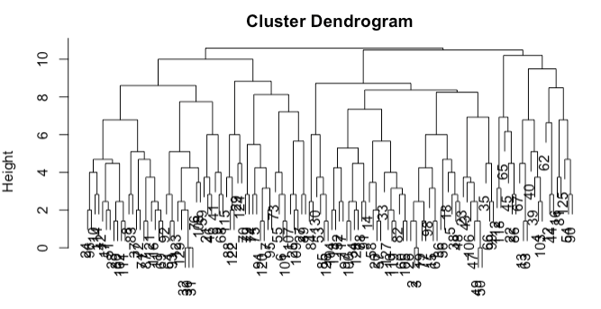
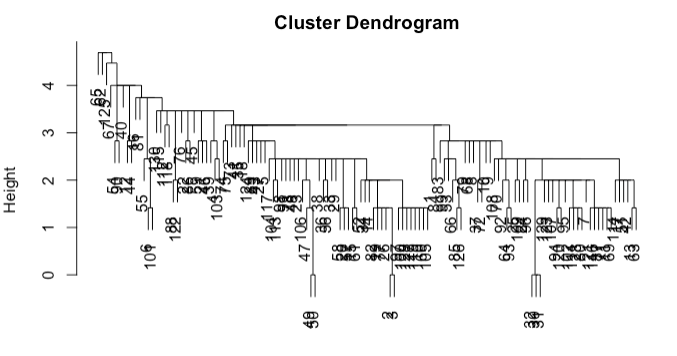

6.4. Hierarchical Clustering
K-means is a popular clustering algorithm. However, a limitation is the need to predefine k, which represents the number of clusters.
Conversely, with hierarchical clustering, you’re not constrained by having to determine K upfront. Instead, the primary input is an n×n distance matrix, supplemented by a specific rule to calculate the distance between sets of observations. This rule becomes pivotal as the clustering evolves, and I’ll delve into why shortly.
When executing a hierarchical clustering algorithm, the resulting structure, often visualized as a dendrogram, is constructed from the bottom up. See the output of a hierarchical clustering process on the sportsranks data (used in our code page) below. Initially, each observation stands as its own cluster, totaling n clusters. Subsequently, the two closest observations are merged, reducing the count to n−1 clusters. This process iterates, gradually consolidating clusters until only one remains.
{kind=link}
However, as clusters amalgamate, a challenge arises when determining the distance between a single point and a cluster or between two clusters. Several methods can address this:
- Single-linkage:
The distance between clusters A and B is the shortest pairwise distance from any point in A to any point in B.
- Complete-linkage:
The distance is gauged by the farthest point in A from any point in B.
- Average-linkage:
This method calculates the mean of all pairwise distances from points in A to points in B.
The chosen method can significantly influence the resulting cluster structure. For instance, using the sportsranks data, complete linkage results in a balanced hierarchy (shown above), while single-linkage (shown below) produces a ‘tailed’ effect.
{kind=link}
A significant benefit of hierarchical clustering is the flexibility it offers post clustering. After crafting the dendrogram (tree representation of clustering), any value of K can be chosen. This choice dictates where to cut the dendrogram to form the desired clusters. For instance, a cut at a specific height could yield two clusters: all observations below one node as one cluster, and another observation as the second.
A unique characteristic of hierarchical clustering is its nested clustering nature. When you opt for K=3, one of the clusters formed at K=2 gets divided. This nesting can be viewed as either an advantage or a limitation, depending on the specific use-case.